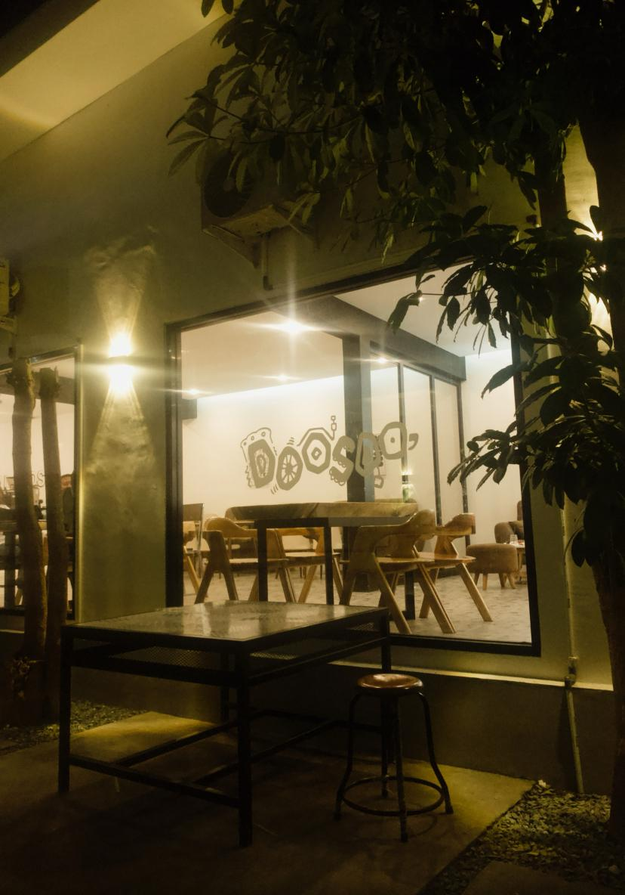
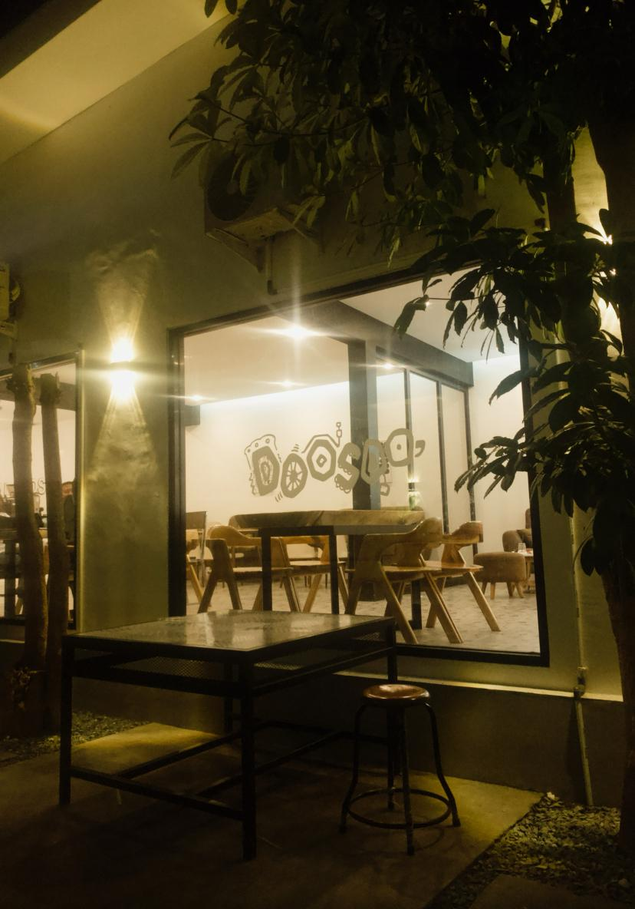

Doosoo Coffee
@doosoo_coffee 

Cari tempat nongkrong yang cozy, aesthetic, dan space-nya luas? Doosoo Coffee Spot wajib kamu datengin! Lokasinya deket Palu Grand Mall, tepatnya di Jalan Diponegoro No. 40. Penataan ruangannya kece parah, bikin betah ngobrol lama bareng temen. Spot fotonya juga banyak cocok buat yang doyan OOTD-an atau hunting konten. Menunya bervariasi, dari kopi, non-kopi, snack, sampai makanan berat, dan yang paling penting harganya affordable! Ada area outdoor buat yang pengen suasana lebih santai, plus board & card games biar nongkrong makin seru. Buka setiap hari ya weekday dari jam 13.00 sampai 23.59, dan weekend (Jumat–Minggu) sampai jam 01.00 dini hari. Yuk, mampir dan rasain sendiri vibes-nya!
The People by Como
@thepeoplebycomo


Lagi cari tempat nongkrong yang aesthetic dan minimalis di tengah kota Palu? The People by Como jawabannya! Coffeeshop bernuansa putih ini punya vibes yang clean dan tenang banget. Indoor-nya super nyaman, adem ber-AC, tiap meja ada colokan jadi cocok banget buat laptop-an atau ngobrol lama. Outdoor-nya juga nggak kalah asik, dikelilingi pohon-pohon yang bikin adem dan chill. Buat yang suka mirror selfie atau OOTD-an, ada kaca aesthetic dan convex mirror yang siap nemenin gaya kamu. Menunya banyak, dari snack ringan sampai makanan berat, kopi dan non-kopi juga lengkap. Lokasinya di Jalan Juanda No. 73, Palu. Buka Senin–Jumat jam 10 pagi sampai 11 malam, dan Sabtu sampai tengah malam. Yuk mampir, rasain sendiri vibes-nya!
Kafi Coffee
@kafi.idnKafi Coffee tuh bener-bener hidden gem di Palu! Tempatnya cozy, instagramable, dan punya vibes yang tenang meskipun ada di tengah kota, jadi cocok banget buat nongkrong, ngerjain tugas, meeting santai, bahkan bukber bareng temen-temen. Di sini kamu bisa pilih mau duduk di indoor yang nyaman, outdoor halaman depan atau belakang yang asri, atau naik ke rooftop buat suasana yang beda. Lengkap banget, kan? Ada juga cermin estetik buat foto rame-rame biar feed makin kece. Soal harga? Tenang aja, semuanya terjangkau banget! Lokasinya di Jalan Panglima Polim — dari arah tugu tinggal belok kanan, posisinya paling ujung sebelah kiri. Yuk, cobain nongkrong di Kafi Coffee dan rasain sendiri nyamannya!